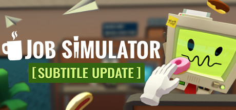
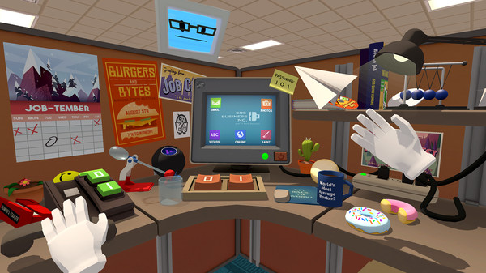
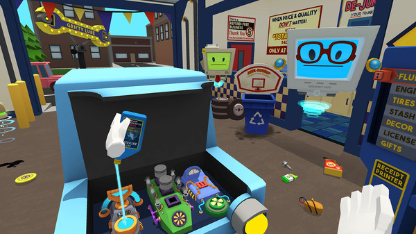
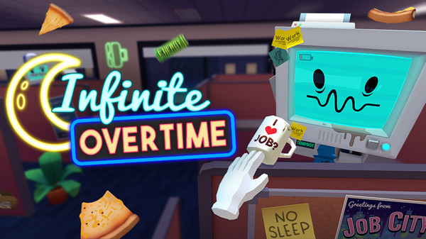

============================
Stats
Title: Job Simulator Update 21.11.2017
Category: Games
Type: PC Game
Language: English
Total size: 704.8 MB
Uploaded By: IGGGAMESCOM
============================
Info:

!!! Remember I don't own or edit anything on links that might be on this torrent!!!
Title: Job Simulator Genre: Simulation Developer: Owlchemy Labs Publisher: Owlchemy Labs Release Date: Apr 5, 2016 About This Game A tongue-in-cheek virtual reality experience for HTC Vive. In a world where robots have replaced all human jobs, step into the Job Simulator to learn what it was like 'to job'.Key Features!Throw a stapler at your boss!Learn to 'job' in four not-so historically accurate representations of work life before society was automated by robots!Use your hands to stack, manipulate, throw, and smash physics objects in an inexplicably satisfying way!Aggressively chug coffee and eat questionable food from the trash!Use the confluence of decades of VR research to accurately track your every movement to sub-millimeter precision so that you eat VR donuts, of course!Able to juggle tomatoes in real life? Do it in VR! Unable to juggle? There's no cleanup required in VR!Gain valuable life experience by firing new employees, serving slushy treats, brewing English tea, and ripping apart car engines!Have a comfortable VR experience where vomiting is solely a gameplay mechanic, not a side-effect!*NEW!* Work the never-ending night shift with the new Infinite Overtime mode!A VR-Only game!Communicate with the Owlchemy team over Twitter at @OwlchemyLabs System Requirements Minimum:OS: Windows 7 SP1, Windows 8.1 or later, Windows 10Processor: CPU: Intel i5-4590 equivalent or betterMemory: 4 GB RAMGraphics: Nvidia GeForce GTX 970, AMD Radeon R9 290 equivalent or betterStorage: 1 GB available spaceSound Card: N/AAdditional Notes: VR ONLY!


